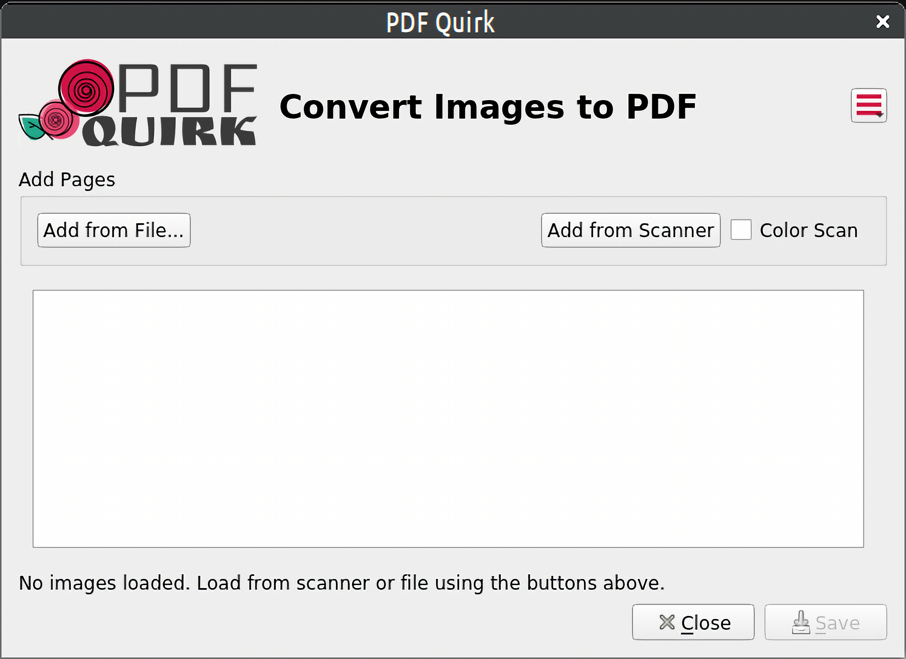

What is AppImage ?
Kali Linux! my most favorite Operating System, once when i was using it, i downloaded an software from internet whose extension was ".appimage".
So what is an .appimage extension? according to wikipedia AppImage is a format for distributing portable software on Linux without needing superuser permissions to install the application. It tries also to allow Linux distribution-agnostic binary software deployment for application developers, also called upstream packaging.
if you understood nice, but if not then an .appimage is a type of file which can run on major Linux Distros.
i'll tell you more in detail but let's take an example for now!
aditya@ubuntuOS:~$ ls
Desktop Downloads Music Pictures Qt Templates
Documents kalitorify PDFQuirk.AppImage Public snap Videos
So as you can see here i have a AppImage file (PDFQuirk.AppImage) of a software called PDFQuirk which is used for making pdf out of images!, now i will use "chmod" command to make my AppImage executable! and then i will run it!
aditya@ubuntuOS:~$ chmod +x PDFQuirk.AppImage
aditya@ubuntuOS:~$ ./PDFQuirk.AppImage

So the above image is from my Computer, and this is the software which i Ran!
So till now you've should understood that an .appimage file is just like an executable which contains all of the dependencies the application needs.
You can make your own AppImage, See More About it at Appimage Docs.